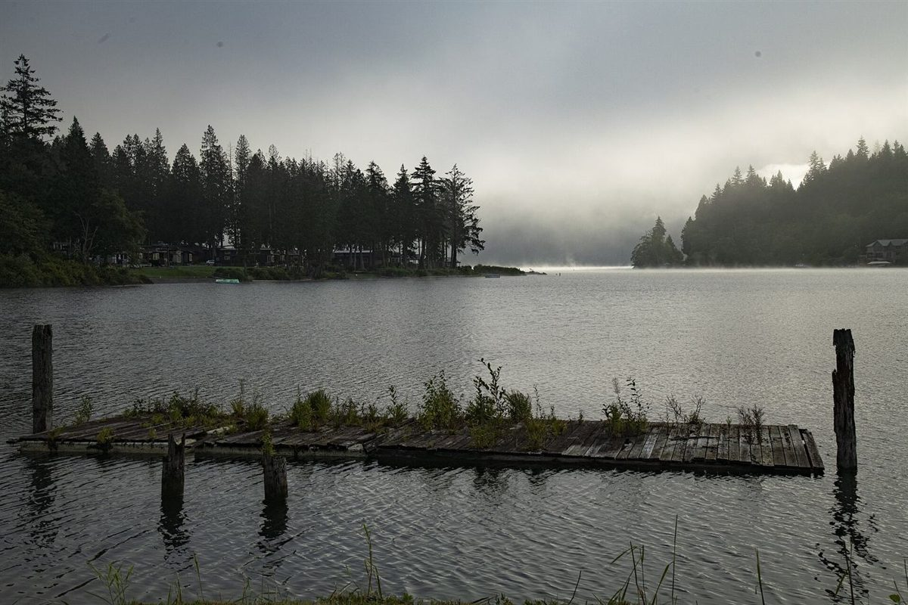
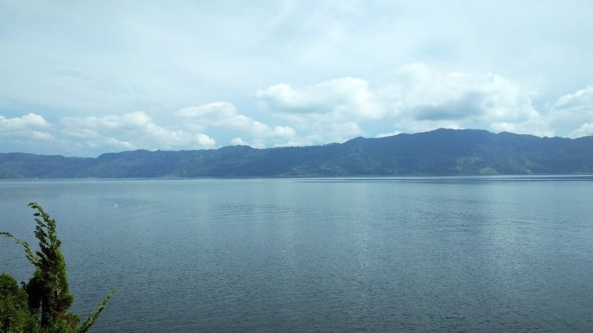
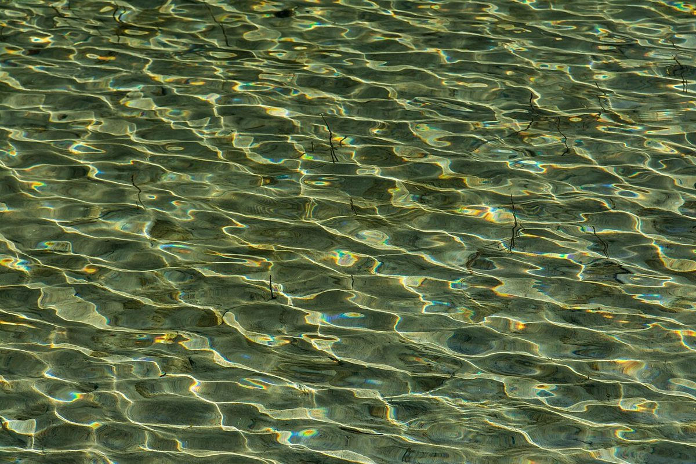

湖畔こはん
12cm制作側の連想
「湖畔」から、湖底の縞を思った
店名の由来は分かりません。制作側は「湖畔」という言葉から、湖の底に何年もかけて積もる泥や砂の縞(湖底の堆積物の柱状試料)を連想しました。そこでこのサイトは、画面左の「柱状図」のように、ページを一枚ずつ深さの違う層として重ねる作りにしています。お店の理念・由来とは無関係の、制作側の連想です。
31cm試料の断面見本
五つの層、五枚の水面。
写真は国外・撮影地不明のフリー素材で、お店の周辺の風景ではありません。屋号からの連想で選んだイメージです。
- 層Aあけがたの薄い層

国外のイメージ(英国) - 層B雲を映す層

国外のイメージ(米国) - 層C青みの層

国外のイメージ(インドネシア) - 層D白くかすむ層

国外のイメージ(ガーナ) - 層E光の網目の層

国外のイメージ(オーストリア)
58cm確認できたこと
お店のこと(確認できたものだけ)
| 所在地 | 〒522-0002 滋賀県彦根市松原2丁目13-12 |
|---|---|
| 電話 | なし |
| 営業時間 | 準備中 |
| 定休日 | 準備中 |
| ご予約 | 準備中 |
| 駐車場 | 準備中 |
| SNS |